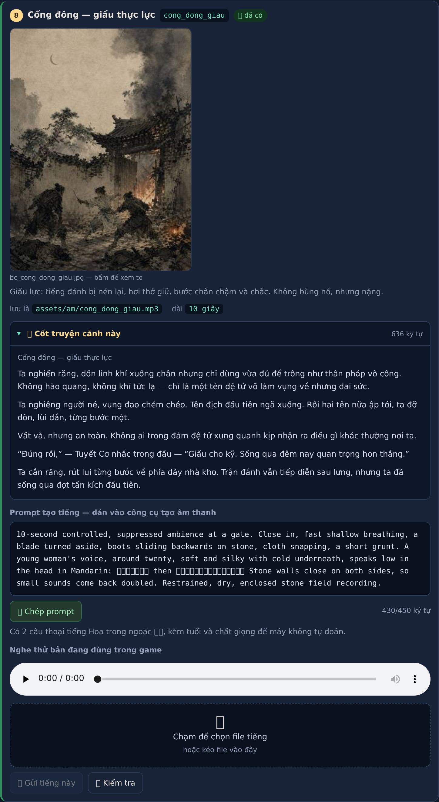
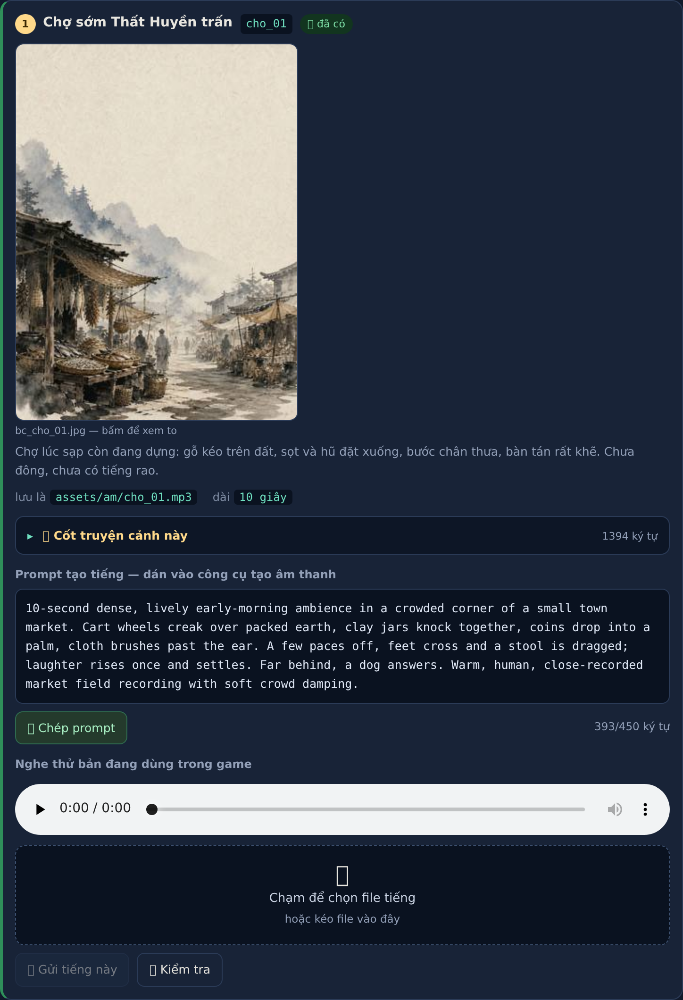
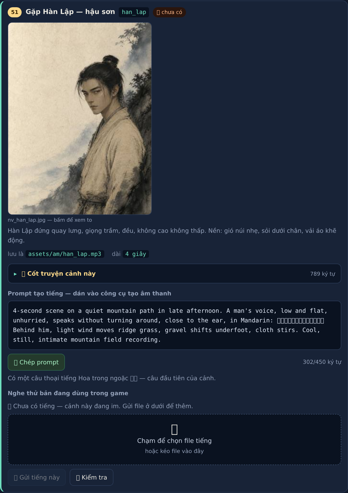
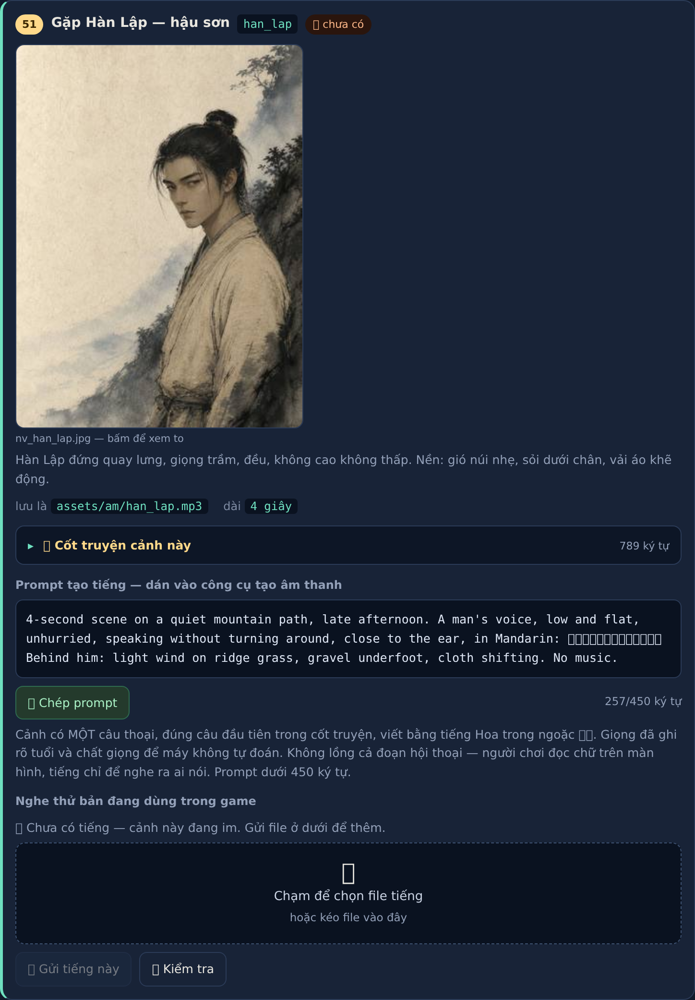
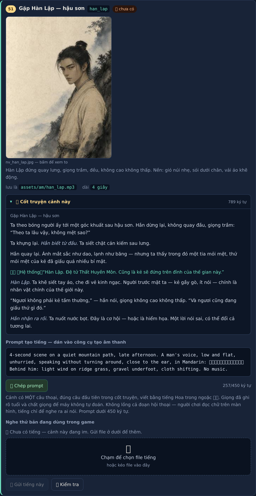

64 cảnh trong xưởng · 21 cảnh mới có lời thoại · mỗi cảnh một độ dài riêng
Có bốn lỗi chồng lên nhau, nên dù anh có tải file lên thì cảnh có thoại vẫn im:
| Lỗi | Hậu quả | Giờ |
|---|---|---|
maCanhTuAnh() chỉ nhận ảnh bc_, trả rỗng với
nv_ / vt_ |
21 cảnh nhân vật không bao giờ tìm được file của mình | Đã nhận cả nv_, vt_ |
Nhánh "diem" kêu một nốt rồi return luôn |
File của cảnh nhân vật bị bỏ qua, chỉ nghe tiếng điểm nhấn | Có file thì phát file |
| So nhóm thay vì so mã cảnh | Mọi cảnh nhân vật cùng nhóm diem → cảnh thứ hai trở đi im |
So theo mã cảnh |
| Vào dần cố định 1,2 giây, tắt ở mốc 10 giây | Tiếng mở cửa 2 giây bị fade nuốt gần hết, chỉ còn một tiếng "phụt" | Theo độ dài thật của cảnh |
Em giả lập ảnh và file tiếng trong trình duyệt (không tạo file mp3 nào trong repo), bật tiếng cảnh, rồi đo biên độ đầu ra mỗi 100 ms. Số dưới đây là thời gian tiếng thật sự kêu.
| Cảnh | Cần | Đo được | |
|---|---|---|---|
do_tam_mieu — Đỗ Tam | 4 s | 3,31 s | đạt |
han_lap — Hàn Lập | 4 s | 3,41 s | đạt |
mieu_trong — mở cửa | 2 s | 1,50 s | đạt |
cho_01 — chợ sớm | 10 s | 9,31 s | đạt |
Phần thiếu so với con số cần là thời gian vào dần và tắt dần, có chủ ý. Trước khi sửa, cảnh 2 giây chỉ kêu được khoảng 0,1 giây.
Đây là phép thử cho lỗi thứ ba — mọi cảnh nhân vật đều cùng nhóm:
| Cảnh | Biên độ đỉnh | Kết quả |
|---|---|---|
han_lap | 0,292 | kêu |
han_lap_2 | 0,292 | kêu |
kiem_linh | 0,293 | kêu |
kiem_linh_thu | 0,291 | kêu |
tuyet_co | 0,293 | kêu |
tuyet_co_than_phan | 0,294 | kêu |
6/6 đều kêu. Trước khi sửa, cảnh thứ hai trở đi đều im.
Bản cũ xoá mất hẹn tắt khi kéo âm lượng, làm tiếng chạy mãi. Em kéo ba lần liên tiếp trong lúc cảnh 4 giây đang phát: tiếng vẫn tắt đúng ở giây 3,61 và ở giây thứ 7 biên độ bằng 0.
Mỗi cảnh khai độ dài riêng trong game/du_lieu_am.py, và con số đó được
ghi vào danh-sach.json để game biết phát bao lâu:
mieu_trong: 2 giâyBot xử lý file tải lên cũng cắt theo đúng con số này, nên file không dài hơn thời gian cảnh hiện trên màn hình.
Mỗi cảnh chỉ một câu — đúng câu thoại đầu tiên của cảnh đó trong cốt truyện,
viết bằng tiếng Hoa trong ngoặc 「」. Prompt ghi rõ tuổi và chất giọng để
máy không tự đoán. Ví dụ cảnh Hàn Lập ở hậu sơn:
21 câu thoại đã viết, tất cả dưới 450 ký tự — giới hạn ô prompt của ElevenLabs.
Mở xưởng âm thanh → Vào game nghe thử →Anh chỉ đúng chỗ nặng nhất. Cảnh cổng đông — giấu thực lực có Tuyết Cơ
nói trong đầu, mà prompt lại không có câu nào. Em kiểm ra nguyên nhân: em chỉ gắn
thoại cho 21 cảnh nhóm "gap", còn cảnh nền thì bỏ qua — dù cảnh nền cũng có
NPC nói.
| Việc | Trước | Giờ |
|---|---|---|
| Cảnh có thoại NPC | 21 | 53 |
| Cảnh không thoại | 43 | 11 |
| Nhầm lời nhân vật chính | 10 | 0 |
| Thiếu tuổi/giới của giọng | 14 | 0 |
Lỗi thứ hai, nặng hơn, em tự tìm ra: 10 cảnh em đưa nhầm lời nhân vật
chính vào prompt. Ví dụ cảnh kiếm linh — thử thách, câu
「信你？」 là của nhân vật chính, không phải kiếm linh. Người chơi tự đọc chữ trên
màn hình, nên đưa lời họ vào prompt là máy đọc thành tiếng một giọng khác — sai hẳn.
Đã thay bằng đúng câu NPC.
Đúng cảnh anh nêu, giờ ra thế này:

Tuyết Cơ, nữ 20 tuổi, giọng mềm như tơ lạnh ở dưới, nói trong đầu: 「这就对了。」 rồi 「藏好。活过今晚比赢更重要。」 Tách thành hai đoạn để máy ngắt đúng chỗ, không đọc liền một hơi.
Mọi câu thoại giờ ghi rõ tuổi và giới. A young woman's voice, around
twenty, soft and silky with cold underneath — không ghi thì máy tự đoán, mỗi
cảnh ra một người khác nhau. Bảng giọng 13 NPC nằm trong game/GIONG_NPC.md.
11 cảnh không thoại là đúng, không phải sót: sáu cảnh chỉ có giọng Hệ thống (máy, vô cảm — không phải NPC), và năm cảnh chỉ có tiếng không gian hoặc nhân vật chính tự nhủ.
Anh nói đúng — ghi chú dưới mỗi ô prompt trong xưởng đang đóng đinh một bộ yêu cầu cũ, đọc đi đọc lại 64 lần. Em đã bỏ hẳn. Và prompt cũng viết lại, vì bộ yêu cầu đó dẫn tới một khuôn xấu.
Bệnh cũ: 42/64 prompt kết thúc bằng đúng một câu y hệt nhau —
No music, no speech, seamless loop. Ba lỗi trong một câu:
| Lỗi | Vì sao sai |
|---|---|
seamless loop | Game phát mỗi file một lần rồi thôi, không lặp. Ghi vậy là bảo máy làm bản nền lặp — ngược hẳn cách game dùng. |
no speech | Trong prompt không hề có ai nói. Phủ định một cái không tồn tại thì máy không biết phải làm gì với nó. |
| Lặp 42 lần | Câu nào lặp nhiều nhất thì máy coi là quan trọng nhất. Ba chữ vô nghĩa thành chỉ dẫn chính. |
Cách viết mới — đúng kiểu bản Gemini mà anh khen:
Close at the ear, … A few paces off, … Far behind, …), không chia
thành danh sách có dấu hai chấm như bản cũ.Warm, tranquil, intimate walled-garden field recording.Ví dụ, cảnh vườn thuốc — bản cũ mở bằng ba lần phủ định, bản mới mở bằng chất âm:

Thẻ cảnh chợ sớm. Prompt mở bằng chất âm, tả tiếng theo câu chảy, chốt bằng thẻ chất âm. Không còn ghi chú cứng bên dưới.

Cảnh có thoại: vẫn đúng một câu tiếng Hoa trong ngoặc 「」, giữ nguyên 21/21 câu — em đã so từng câu với bản cũ.
Đo lại: 64/64 prompt dưới 450 ký tự (dài nhất 420, trước là 419 nhưng trung bình 315 → nay 344 vì tả kỹ hơn). Câu khuôn còn 0. Ghi chú cứng còn 0. Bố cục không tràn ngang trên cả iPad và iPhone, 64 khối truyện vẫn đóng mặc định.
Trước đây mỗi thẻ có hai bộ từ khoá tiếng Anh — em đã bỏ. Giờ chỗ đó là
đoạn truyện thật của cảnh đó, lấy thẳng từ game/chapters/chuong1.json,
đóng sẵn cho gọn trang. Anh mở ra đọc là biết ai đang ở đó, chuyện gì đang xảy ra,
nên tiếng nào phải nghe được.
Khối truyện đóng mặc định, chạm vào dòng 📖 Cốt truyện cảnh này là mở, chạm lần nữa là đóng. Mỗi cảnh có một khối riêng, mở nhiều cảnh cùng lúc được. Ghi rõ số ký tự để anh biết đoạn dài hay ngắn. Dòng 【Hệ thống】 hiện màu xanh, chữ *nhấn mạnh* trong truyện hiện nghiêng, giống hệt trong game.

Đóng: chỉ một dòng, không chiếm chỗ.

Mở: đọc được cả đoạn, trang tự giãn ra, không có khung cuộn riêng bên trong.
Trang xưởng tự gọi GitHub API 64 lần mỗi lần mở — mỗi cảnh một lần, để hỏi
"cảnh này có file chưa". GitHub chỉ cho 60 lượt/giờ cho mỗi địa chỉ, nên mở trang một
lần là vượt hạn mức, và từ đó mọi cảnh đều hiện như chưa có tiếng. Đây chính là lý do
thẻ mieu_trong báo sai dù file vẫn tải được.
Giờ trang không gọi API nữa: cảnh nào có file thì trỏ thẳng vào file ngay trong trang. Đo lại: 0 lượt gọi API, 0 tài nguyên lỗi, 40 thẻ hiện đúng khung nghe nhạc, 24 thẻ chưa có hiện đúng. Nút 🔄 Kiểm tra cũng đổi sang hỏi thẳng file trên trang, không cần token, không hạn mức.
Em không tải file mp3 nào lên repo — đúng như quy ước. Anh tự đưa tiếng vào bằng một trong hai cách:
xuong-am, kéo file vào.Cảnh nào chưa có file thì vẫn im, không lấy tiếng của cảnh khác. Hiện có 44 file
tiếng; 40 cảnh trong chương đã dùng được. 24 cảnh còn thiếu — đúng 21 cảnh thoại
mới, cộng ba cảnh cũ vuon_thuoc_hoi, vuon_thuoc_im,
dot_pha.
Nhãn trên mỗi thẻ xưởng giờ đọc đúng trạng thái ngay khi mở trang: 40 thẻ ✅ đã có, 24 thẻ ⬜ chưa có. Trước đây mọi thẻ đều ghi "chưa có" vì nhãn bị viết cứng trong mã sinh trang, chỉ đổi sau khi anh bấm "Kiểm tra lại" từng thẻ.
cho_01.mp3 và mieu_trong.mp3. Em đã khôi phục
cả hai từ git ngay, kiểm tra lại đúng 44 file mỗi thư mục, không thêm không bớt. Nếu
anh nghe hai cảnh đó thấy khác trước thì báo em.